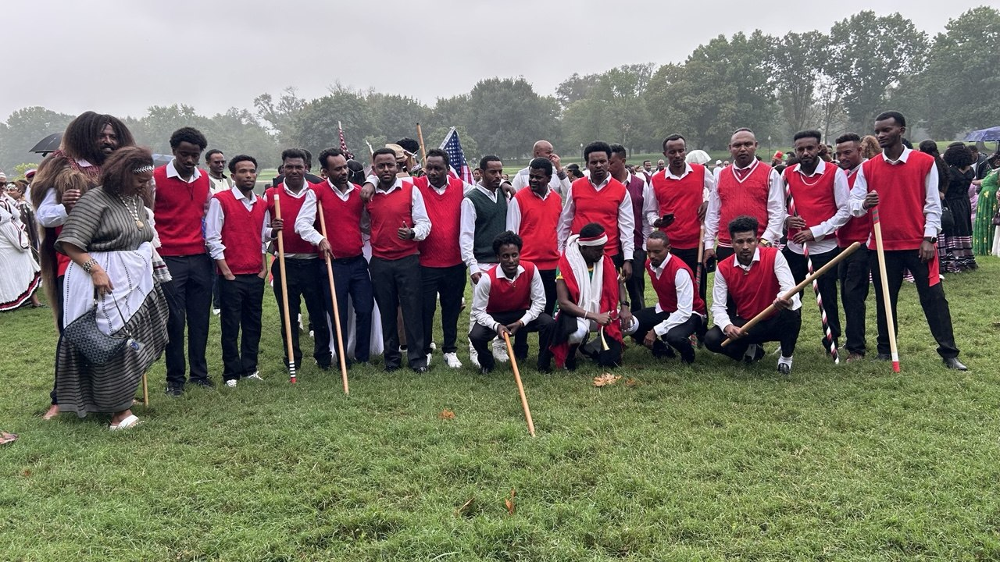

CULTURE
Showing up together for Irreechaa and celebrating the traditions that connect generations.

JIRRA / WE ARE HERE
JIRRA is a DMV-based Oromo community bringing people together through culture, friendship, celebration and football.
Showing up together for Irreechaa and celebrating the traditions that connect generations.
A place to belong, build friendships, create memories and strengthen the Oromo community in the DMV.
JIRRA FC brings the same identity and energy onto the pitch, including tournament competition and OSFNA events.
ROOTED IN CULTURE



JIRRA FC
Fixtures, tournament appearances, results and team stories will live here.
LATEST FROM JIRRA
STAY CONNECTED
DMV → 🌎